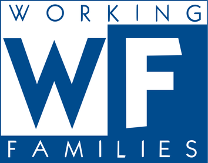

Indivisible
"In 2018, Arati knocked doors in New Jersey’s 5th Congressional District to make sure her district went blue. Now, she’s running for Congress herself, because NJ5 deserves a representative who will fight for our healthcare, our financial security and our planet's future, without seeking permission from corporate donors."
Working Families Party
"In 2018, Arati knocked doors in New Jersey’s 5th Congressional District to make sure her district went blue. Now, she’s running for Congress herself, because NJ5 deserves a representative who will fight for our healthcare, our financial security and our planet's future, without seeking permission from corporate donors."
Progressive Change Campagin Committee